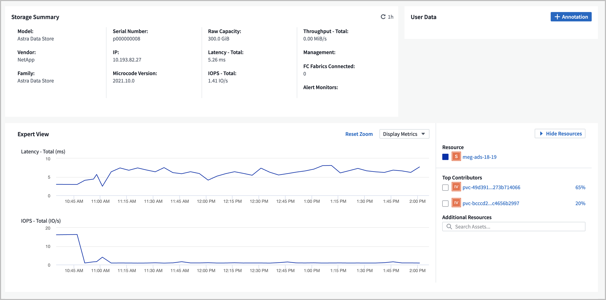
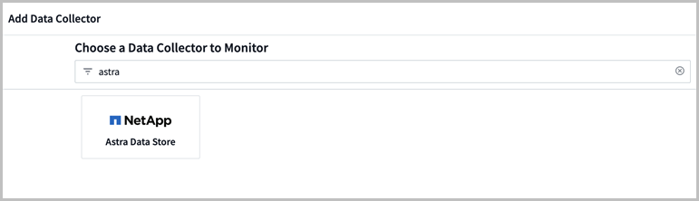
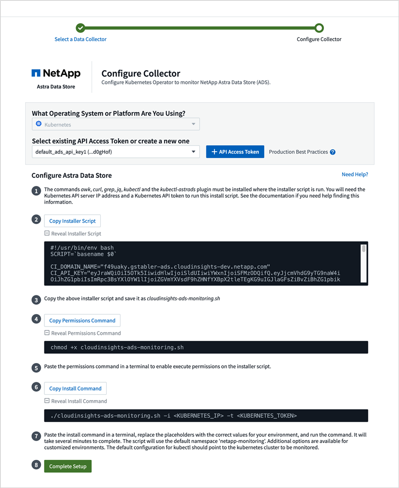

要求變更文件
要求變更文件 編輯此頁面
編輯此頁面 瞭解如何作出貢獻
瞭解如何作出貢獻利用功能表監控指標Cloud Insights
您可以使用Cloud Insights 支援功能來監控Astra Data Store指標。
以下是一些展示Cloud Insights 在《支援》中的Astra Data Store指標範例：
您也可以使用、顯示Astra Data Store中產生的度量清單 [Open Metrics API help]。
您可以完成下列工作：
完成Cloud Insights 連線先決條件工作
在將Astra Data Store與Cloud Insights 支援功能整線之前、您必須先完成下列工作：
-
"安裝Astra Data Store監控操作員" 這是Astra Data Store安裝說明的一部分。
-
"安裝kubecl-astrads二進位檔" 這是Astra Data Store安裝說明的一部分。
-
請確認下列命令可用：「awk、curl、grep」和「jq」
收集下列資訊：
-
* Cloud Insights 具備類別讀寫權限的API存取權杖*：擷取單元、資料收集、資料擷取和記錄擷取。這將用於讀取/寫入作業、設定擷取單位、以及設定資料擷取程序。
-
* Kubernetes API伺服器IP位址和連接埠*。這是用來監控Astra Data Store叢集。
-
* Kubernetes API權杖*。這是用來呼叫Kubernetes API。
-
持續磁碟區組態。有關如何配置持續磁碟區的資訊。
擷取單元儲存
擷取單元需要三個持續磁碟區來儲存安裝檔案、組態資料和記錄。監控操作員使用預設儲存類別來建立持續的Volume宣告。您可以在執行安裝程式指令碼時、使用「-s」選項來指定不同的儲存類別名稱。
如果您的Kubernetes叢集沒有儲存資源配置程式（例如NetApp Trident）、您可以在執行安裝程式指令碼時、使用「-r」選項來提供本機檔案系統路徑。設定「-r」選項時、安裝程式指令碼會在所提供的目錄內建立三個持續磁碟區。此目錄需要至少150 GB的可用空間。
下載並執行安裝指令碼
提供Bash指令碼、可透過監控操作員啟用Astra Data Store監控功能。Cloud Insights安裝指令碼會安裝擷取單元、其中含有Astra Data Store收集器和一個Fluent位元代理程式。
下載時、將會在安裝程式指令碼中內嵌選定的「更新網域名稱」和「選定的更新API存取權杖」Cloud Insights Cloud Insights 。
然後、會以下列方式傳送指標：
-
這個部門將會將指標傳送到這個數據湖。Cloud Insights Cloud Insights
-
Fluent位元會將記錄傳送至記錄擷取服務。
顯示安裝程式指令碼說明
安裝程式指令碼的完整說明文字如下所示：
顯示安裝程式指令碼說明文字：
./cloudinsights-ads-monitoring.sh -h
回應：
USAGE: cloudinsights-ads-monitoring.sh [OPTIONS]
Configure monitoring of Astra Data Store by Cloud Insights.
OPTIONS:
-h Display this help message.
-d ci_domain_name Cloud Insights tenant domain name.
-i kubernetes_ip Kubernetes API server IP address.
-k ci_api_key Cloud Insights API Access Token.
-n namespace Namespace for monitoring components. (default: netapp-monitoring)
-p kubernetes_port Kubernetes API server port. (default: 6443)
-r root_pv_dir Create 3 Persistent Volumes in this directory for the Acquisition Unit.
Only specify this option if there is no Storage Provisioner installed and the PVs do not already exist.
-s storage_class Storage Class name for provisioning Acquisition Unit PVs. If not specified, the default storage class will be used.
-t kubernetes_token Kubernetes API server token.
執行安裝指令碼
-
如果Cloud Insights 您還沒有這個帳戶、請建立一個這個帳戶。
-
登入Cloud Insights 到
-
在「支援資料」功能表中、按一下「管理」>「資料收集器」Cloud Insights 。
-
按一下「+資料收集器」以新增收集器。

-
按一下「* Astra Data Store*」方塊。
-
選取正確Cloud Insights 的「循環API」存取權杖、或建立新的權杖。
-
請依照指示下載安裝程式指令碼、更新權限、然後執行指令碼。
此指令碼包含Cloud Insights 您的URL、以及所選Cloud Insights 的循環API存取權杖。

-
指令碼完成後、按一下*完成設定*。
安裝指令碼完成後、Astra Data Store收集器會出現在資料集區清單中。

如果指令碼因為錯誤而結束、您可以在錯誤解決之後再次執行。如果您的環境未使用預設設定、指令碼可支援其他參數、例如監控操作員命名空間和Kubernetes API伺服器連接埠。請使用「./cloudinsights-ads-monitoring.sh -h」中的「-h」選項查看使用量和說明文字。 安裝指令碼會在組態成功時產生類似的輸出：
Configuring Cloud Insights monitoring for Astra Data Store . . . Configuring monitoring namespace ... Configuring output sink and Fluent Bit plugins Configuring Acquisition Unit ... Acquisition Unit has been installed successfully. Configuring Astra Data Store data collector Astra Data Store collector data '<CLUSTER_NAME>' created Configuration done!
代理程式CR範例
以下是執行安裝程式指令碼後、「monitoring NetApp」代理程式CR的外觀範例。
spec:
au:
isEnabled: true
storageClassName: auto-sc
cluster-name: meg-ads-21-22-29-30
docker-repo: docker.repo.eng.netapp.com/global/astra
fluent-bit:
- name: ads-tail
outputs:
- sink: ADS_STDOUT
substitutions:
- key: TAG
value: firetapems
- key: LOG_FILE
values:
- /var/log/firetap/*/ems/ems
- /var/log/firetap/ems/*/ems/ems
- key: ADS_CLUSTER_NAME
value: meg-ads-21-22-28-29-30
- name: agent
- name: ads-tail-ci
outputs:
- sink: CI
substitutions:
- key: TAG
value: netapp.ads
- key: LOG_FILE
values:
- /var/log/firetap/*/ems/ems
- /var/log/firetap/ems/*/ems/ems
- key: ADS_CLUSTER_NAME
value: meg-ads-21-22-28-29-30
output-sink:
- api-key: abcd
domain-name: bzl9ngz.gst-adsdemo.ci-dev.netapp.com
name: CI
serviceAccount: sa-netapp-monitoring
status:
au-pod-status: UP
au-uuid: eddeccc6-3aa3-4dd2-a98c-220085fae6a9
編輯Cloud Insights 此鏈接
您稍後可以編輯Kubernetes API權杖或Cloud Insights 是使用此功能的循環API存取權杖：
-
如果您想要更新Kubernetes API權杖、您應該從Cloud Insights 這個UI編輯Astra Data Store收集器。
-
如果您想要更新Cloud Insights 遙測和記錄所用的循環API存取權杖、您應該使用kubectl命令來編輯監控操作員CR。
更新Kubernetes API權杖
-
登入Cloud Insights 到
-
選取*管理*>*資料收集器*以存取「資料收集器」頁面。
-
尋找Astra Data Store叢集的項目。
-
按一下頁面右側的功能表、然後選取*編輯*。
-
使用新值更新Kubernetes API Token欄位。
-
選取*儲存Collector *。
更新Cloud Insights 程式：更新程式碼
-
登入Cloud Insights 到
-
選取「管理>* API存取*」、然後按一下「+ API存取權杖」、即可建立新Cloud Insights 的「循環API存取權杖」。
-
編輯Agent CR:
kubectl --namespace netapp-monitoring edit agent agent-monitoring-netapp
-
找到"output-sink（輸出接收器）"區段、找到名稱為"CI"的項目。
-
如需標籤「API-金鑰」、請將目前值改為全新Cloud Insights 的REAPI存取權杖。
此區段如下所示：
output-sink: - api-key: <api key value> domain-name: <tenant url> name: CI -
儲存並結束編輯器視窗。
監控操作員會更新Fluent位元、以使用新Cloud Insights 的更新版的解決方案API存取權杖。
中斷Cloud Insights 與該功能的連線
若要中斷Cloud Insights 與功能表的連線、您必須Cloud Insights 先從功能表上刪除Astra Data Store收集器。完成後、您可以從監控操作員移除擷取單元、Telegraf（若已設定）和Fluent位元組態。
移除Astra Data Store收集器
-
登入Cloud Insights 到
-
選取*管理*>*資料收集器*以存取「資料收集器」頁面。
-
尋找Astra Data Store叢集的項目。
-
選取畫面右側的功能表、然後選取*刪除*。
-
按一下確認頁面上的*刪除*。
移除擷取單元、Telegraf（若已設定）和Fluent位元
-
編輯Agent CR:
kubectl --namespace netapp-monitoring edit agent agent-monitoring-netapp
-
找到「au」區段、並將「isEnabled」設為「假」
-
找到「Fluent位元」區段、然後移除名為「ads tail-CI」的外掛程式。如果沒有其他外掛程式、您可以移除「Fluent位元」區段。
-
如果已設定Telegraf、請找出「Telegraf」區段、然後移除名為「ads開放式指標」的外掛程式。如果沒有其他外掛程式、您可以移除「Telewraf」區段。
-
找到「output-sink（輸出接收器）」區段、然後移除名為「CI」的接收器。
-
儲存並結束編輯器視窗。
監控操作員會更新Telegraf（若已設定）和Fluent位元組態、並刪除擷取單元Pod。
-
如果您將本機目錄用於擷取單元PV、而非儲存資源配置程式、請刪除PV：
kubectl delete pv au-lib au-log au-pv
然後、刪除正在執行擷取單元的節點上的實際目錄。
-
在擷取單元Pod刪除之後、您可以從Cloud Insights 功能表中刪除擷取單元。
-
在「支援資料」功能表中、選取*管理*>*資料收集器*。Cloud Insights
-
按一下「擷取單位」標籤。
-
按一下擷取設備Pod旁的功能表。
-
選擇*刪除*。
-
監控操作員會更新Telegraf（若已設定）和Fluent位元組態、並移除擷取單元。
Open Metrics API說明
以下是可用來從Astra Data Store收集度量的API清單。
-
「說明」行說明指標。
-
「類型」行指出度量是量表還是計數器。
# HELP astrads_cluster_capacity_logical_percent Percentage cluster logical capacity that is used (0-100) # TYPE astrads_cluster_capacity_logical_percent gauge # HELP astrads_cluster_capacity_max_logical Max Logical capacity of the cluster in bytes # TYPE astrads_cluster_capacity_max_logical gauge # HELP astrads_cluster_capacity_max_physical The sum of the space in the cluster in bytes for storing data after provisioning efficiencies, data reduction algorithms and replication schemes are applied # TYPE astrads_cluster_capacity_max_physical gauge # HELP astrads_cluster_capacity_ops The IO operations capacity of the cluster # TYPE astrads_cluster_capacity_ops gauge # HELP astrads_cluster_capacity_physical_percent The percentage of cluster physical capacity that is used (0-100) # TYPE astrads_cluster_capacity_physical_percent gauge # HELP astrads_cluster_capacity_used_logical The sum of the bytes of data in all volumes in the cluster before provisioning efficiencies, data reduction algorithms and replication schemes are applied # TYPE astrads_cluster_capacity_used_logical gauge # HELP astrads_cluster_capacity_used_physical Used Physical capacity of a cluster in bytes # TYPE astrads_cluster_capacity_used_physical gauge # HELP astrads_cluster_other_latency The sum of the accumulated latency in seconds for other IO operations of all the volumes in a cluster. Divide by astrads_cluster_other_ops to get the average latency per other operation # TYPE astrads_cluster_other_latency counter # HELP astrads_cluster_other_ops The sum of the other IO operations of all the volumes in a cluster # TYPE astrads_cluster_other_ops counter # HELP astrads_cluster_read_latency The sum of the accumulated latency in seconds of read IO operations of all the volumes in a cluster. Divide by astrads_cluster_read_ops to get the average latency per read operation # TYPE astrads_cluster_read_latency counter # HELP astrads_cluster_read_ops The sum of the read IO operations of all the volumes in a cluster # TYPE astrads_cluster_read_ops counter # HELP astrads_cluster_read_throughput The sum of the read throughput of all the volumes in a cluster in bytes # TYPE astrads_cluster_read_throughput counter # HELP astrads_cluster_storage_efficiency Efficacy of data reduction technologies. (logical used / physical used) # TYPE astrads_cluster_storage_efficiency gauge # HELP astrads_cluster_total_latency The sum of the accumulated latency in seconds of all IO operations of all the volumes in a cluster. Divide by astrads_cluster_total_ops to get average latency per operation # TYPE astrads_cluster_total_latency counter # HELP astrads_cluster_total_ops The sum of the IO operations of all the volumes in a cluster # TYPE astrads_cluster_total_ops counter # HELP astrads_cluster_total_throughput The sum of the read and write throughput of all the volumes in a cluster in bytes # TYPE astrads_cluster_total_throughput counter # HELP astrads_cluster_utilization_factor The ratio of the current cluster IO operations based on recent IO sizes to the cluster iops capacity. (0.0 - 1.0) # TYPE astrads_cluster_utilization_factor gauge # HELP astrads_cluster_volume_used The sum of used capacity of all the volumes in a cluster in bytes # TYPE astrads_cluster_volume_used gauge # HELP astrads_cluster_write_latency The sum of the accumulated latency in seconds of write IO operations of all the volumes in a cluster. Divide by astrads_cluster_write_ops to get the average latency per write operation # TYPE astrads_cluster_write_latency counter # HELP astrads_cluster_write_ops The sum of the write IO operations of all the volumes in a cluster # TYPE astrads_cluster_write_ops counter # HELP astrads_cluster_write_throughput The sum of the write throughput of all the volumes in a cluster in bytes # TYPE astrads_cluster_write_throughput counter # HELP astrads_disk_base_seconds Base for busy, pending and queued. Seconds since collection began # TYPE astrads_disk_base_seconds counter # HELP astrads_disk_busy Seconds the disk was busy. 100 * (astrads_disk_busy / astrads_disk_base_seconds) = percent busy (0-100) # TYPE astrads_disk_busy counter # HELP astrads_disk_capacity Raw Capacity of a disk in bytes # TYPE astrads_disk_capacity gauge # HELP astrads_disk_io_pending Summation of the count of pending io operations for a disk times time. Divide by astrads_disk_base_seconds to get the average pending operation count # TYPE astrads_disk_io_pending counter # HELP astrads_disk_io_queued Summation of the count of queued io operations for a disk times time. Divide by astrads_disk_base_seconds to get the average queued operations count # TYPE astrads_disk_io_queued counter # HELP astrads_disk_read_latency Total accumulated latency in seconds for disk reads. Divide by astrads_disk_read_ops to get the average latency per read operation # TYPE astrads_disk_read_latency counter # HELP astrads_disk_read_ops Total number of read operations for a disk # TYPE astrads_disk_read_ops counter # HELP astrads_disk_read_throughput Total bytes read from a disk # TYPE astrads_disk_read_throughput counter # HELP astrads_disk_write_latency Total accumulated latency in seconds for disk writes. Divide by astrads_disk_write_ops to get the average latency per write operation # TYPE astrads_disk_write_latency counter # HELP astrads_disk_write_ops Total number of write operations for a disk # TYPE astrads_disk_write_ops counter # HELP astrads_disk_write_throughput Total bytes written to a disk # TYPE astrads_disk_write_throughput counter # HELP astrads_value_scrape_duration Duration to scrape values # TYPE astrads_value_scrape_duration gauge # HELP astrads_volume_capacity_available The minimum of the available capacity of a volume and the available capacity of the cluster in bytes # TYPE astrads_volume_capacity_available gauge # HELP astrads_volume_capacity_available_logical Logical available capacity of a volume in bytes # TYPE astrads_volume_capacity_available_logical gauge # HELP astrads_volume_capacity_percent Percentage of volume capacity available (0-100). (capacity available / provisioned) * 100 # TYPE astrads_volume_capacity_percent gauge # HELP astrads_volume_capacity_provisioned Provisioned capacity of a volume in bytes after setting aside the snapshot reserve. (size - snapshot reserve = provisioned) # TYPE astrads_volume_capacity_provisioned gauge # HELP astrads_volume_capacity_size Total capacity of a volume in bytes # TYPE astrads_volume_capacity_size gauge # HELP astrads_volume_capacity_snapshot_reserve_percent Snapshot reserve percentage of a volume (0-100) # TYPE astrads_volume_capacity_snapshot_reserve_percent gauge # HELP astrads_volume_capacity_snapshot_used The amount of volume snapshot data that is not in the active file system in bytes # TYPE astrads_volume_capacity_snapshot_used gauge # HELP astrads_volume_capacity_used Used capacity of a volume in bytes. This is bytes in the active filesystem unless snapshots are consuming more than the snapshot reserve. (bytes in the active file system + MAX(0, snapshot_used-(snapshot_reserve_percent/100*size)) # TYPE astrads_volume_capacity_used gauge # HELP astrads_volume_other_latency Total accumulated latency in seconds for operations on a volume that are neither read or write. Divide by astrads_volume_other_ops to get the average latency per other operation # TYPE astrads_volume_other_latency counter # HELP astrads_volume_other_ops Total number of operations for a volume that are neither read or write # TYPE astrads_volume_other_ops counter # HELP astrads_volume_read_latency Total accumulated read latency in seconds for a volume. Divide by astrads_volume_read_ops to get the average latency per read operation # TYPE astrads_volume_read_latency counter # HELP astrads_volume_read_ops Total number of read operations for a volume # TYPE astrads_volume_read_ops counter # HELP astrads_volume_read_throughput Total read throughput for a volume in bytes # TYPE astrads_volume_read_throughput counter # HELP astrads_volume_total_latency Total accumulated latency in seconds for all operations on a volume. Divide by astrads_volume_total_ops to get the average latency per operation # TYPE astrads_volume_total_latency counter # HELP astrads_volume_total_ops Total number of operations for a volume # TYPE astrads_volume_total_ops counter # HELP astrads_volume_total_throughput Total thoughput for a volume in bytes # TYPE astrads_volume_total_throughput counter # HELP astrads_volume_write_latency Total accumulated write latency in seconds for volume. Divide by astrads_volume_write_ops to get the average latency per write operation # TYPE astrads_volume_write_latency counter # HELP astrads_volume_write_ops Total number of write operations for a volume # TYPE astrads_volume_write_ops counter # HELP astrads_volume_write_throughput Total write thoughput for a volume in bytes # TYPE astrads_volume_write_throughput counter